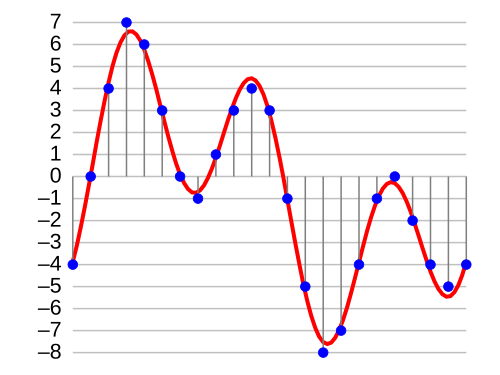
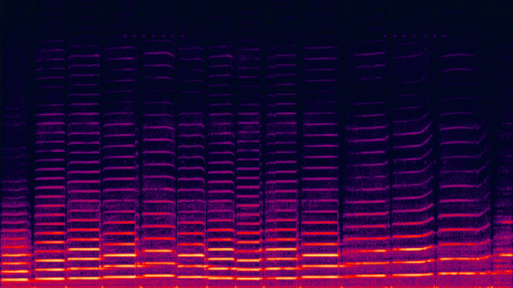

Pertemuan 04 • Representasi Modalitas III: Audio & Video
Dosen Pengampu
I Wayan Wiprayoga Wisesa
Program Studi Teknik Informatika
Jurusan Teknologi Produksi dan Industri
Institut Teknologi Sumatera (ITERA) wayan.wisesa@if.itera.ac.id
Tujuan Pembelajaran Sesi Ini
Di akhir sesi kuliah ini, mahasiswa diharapkan mampu menguasai kompetensi dasar berikut:
01
Karakteristik Audio & Video
Menjelaskan karakteristik data audio dan video serta tantangannya dalam pembelajaran mesin.
02
Representasi Audio
Memahami metode representasi audio seperti spektrogram dan MFCC untuk deep learning.
03
Arsitektur DL Audio-Video
Menjelaskan arsitektur deep learning seperti 3D CNN dan RNN/LSTM untuk audio dan video.
04
Tantangan Video
Mengidentifikasi tantangan spesifik pemrosesan video seperti dimensi tinggi dan redundansi temporal.
Bagian 1
Audio & Video sebagai Data
Memahami karakteristik dan tantangan dua modalitas yang membawa dimensi waktu.
Karakteristik Data Audio
Audio adalah sinyal yang berubah seiring waktu — dibangun dari dua komponen dasar.
01. Sekuensial dan Temporal informasi berubah seiring waktu.
02. Frekuensi dan Amplitudo dua komponen dasar suara.
03. Variasi Panjang Data durasi bervariasi dan sangat rentan terhadap noise lingkungan.
Karakteristik Data Video
Video adalah urutan frame gambar — menggabungkan struktur gambar dengan dimensi waktu.
image
Frame t
Gambar pada waktu ke-t.
image
Frame t+1
Perubahan gerakan.
image
Frame t+2
Kontinuitas temporal.
movie
Sekuens
Urutan utuh frame.
Aspek
Penjelasan
Sekuens gambar
Video adalah urutan frame gambar.
Spasial & temporal
Informasi spasial (dalam frame) dan temporal (antar frame).
Dimensi sangat tinggi
Gabungan dimensi gambar dan dimensi waktu.
Redundansi
Banyak informasi berulang antar frame.
Tantangan dalam Pemrosesan Audio/Video
Tiga tantangan lintas-modalitas yang paling menonjol.
Volume Data
Sangat besar, terutama video — membutuhkan komputasi dan memori masif.
Ketergantungan Jarak Jauh
Menangkap hubungan antar peristiwa yang berjauhan dalam waktu.
Asinkronisitas
Peristiwa di audio/video mungkin tidak sinkron dengan modalitas lain.
lightbulb
Ketiga tantangan ini menjadi alasan mengapa representasi yang ringkas dan informatif sangat menentukan kinerja model.
Bagian 2
Representasi Audio
Dari gelombang suara mentah ke representasi 2D yang siap diproses deep learning.
Gelombang Suara (Raw Audio)
Representasi dasar: sinyal kontinu dicuplik dan dikuantisasi menjadi deretan sampel amplitudo.

Sumber: Wikimedia Commons
01. Sampling Sinyal analog kontinu dicuplik pada interval waktu diskret dan tetap (\(t\)).
02. Kuantisasi Setiap sampel dibulatkan ke level terdekat — pada 4-bit hanya tersedia 16 level.
03. Sinyal Suara Digital Hasilnya sekuens angka amplitudo \(x[t]\).
warning
Sulit diproses langsung oleh deep learning karena variasi tinggi dan noise yang kuat.
Teorema Sampling Nyquist–Shannon
Sinyal audio kontinu hanya dapat direkonstruksi secara utuh dari sampelnya jika laju pencuplikan cukup tinggi terhadap kandungan frekuensi tertingginya.
Teorema Sampling Nyquist–Shannon
$$f_s \;>\; 2\,f_{\max}$$
\(f_s\)
Laju pencuplikan (sampling rate) — banyaknya sampel per detik, dalam Hz.
\(f_{\max}\)
Frekuensi tertinggi yang terkandung dalam sinyal — batas pita (bandlimit).
\(2\,f_{\max}\)
Laju Nyquist — ambang minimum agar sampel tetap mewakili sinyal asli.
warning
Jika \(f_s \le 2\,f_{\max}\), frekuensi tinggi terlipat menjadi frekuensi rendah palsu (aliasing) dan sinyal asli tidak dapat dipulihkan.
Spektrogram
Representasi visual sinyal audio yang menunjukkan bagaimana frekuensi berubah seiring waktu — dihitung dengan Short-Time Fourier Transform (STFT).

Sumber: Wikimedia Commons
01. Sumbu X (Waktu) setiap kolom adalah satu jendela waktu.
02. Sumbu Y (Frekuensi) seberapa tinggi nada komponen sinyal.
03. Intensitas warna kekuatan sinyal pada tiap frekuensi.
auto_awesome
Spektrogram mengubah representasi 1D menjadi 2D (mirip gambar) sehingga bisa diproses CNN.
STFT: Matematika di Balik Spektrogram
Membagi sinyal menjadi jendela waktu, lalu mengukur intensitas frekuensi pada setiap jendela.
Apakah cukup memproses setiap frame secara terpisah, lalu "menjumlahkan" hasilnya?
Masalah Dimensi Waktu: Pendekatan frame-by-frame mengabaikan informasi temporal — gerakan, urutan, dan perubahan antar frame. Video bukan sekadar tumpukan gambar; makna muncul dari bagaimana frame berubah seiring waktu. Ini mendorong arsitektur yang memodelkan spasial dan temporal secara bersamaan.
Konvolusi 3D: Menambah Dimensi Waktu
Konvolusi 3D menambahkan satu dimensi lagi untuk waktu.
Benang merah representasi audio dan video dari sinyal mentah hingga embedding berbasis deep learning.
Representasi Audio
Raw waveform → sinyal 1D amplitudo-waktu
Spektrogram → peta 2D frekuensi-waktu (STFT)
MFCC → fitur ringkas timbre untuk ucapan
Representasi Video
Frame-by-frame → sederhana, abaikan temporal
3D CNN → spasial-temporal langsung
CNN + RNN/LSTM → spasial + temporal hibrid
Video Transformer → attention ruang-waktu
lightbulb
Kunci Multimodal: audio dan video menambahkan dimensi temporal — representasi yang baik harus menangkap perubahan seiring waktu, bukan hanya isi statis.
Diskusi Kelas
Diskusikan bersama rekan di samping Anda selama 3-5 menit:
help
Pertanyaan 1: Mengapa mengubah sinyal audio 1D menjadi spektrogram 2D sangat membantu untuk pemrosesan deep learning?
help
Pertanyaan 2: Dalam skenario apa Anda memilih 3D CNN dibandingkan kombinasi 2D CNN + RNN/LSTM untuk video? Pertimbangkan trade-off-nya.
help
Pertanyaan 3: Bagaimana teknik kompresi video (misal: MPEG) dapat mempengaruhi kemampuan model deep learning mengekstrak fitur?
Referensi Utama & Bacaan Lanjutan
Rekomendasi literatur akademik wajib dan bacaan lanjutan:
[1]
Goodfellow, I., Bengio, Y., & Courville, A. (2016).
Deep Learning. MIT Press. — Bab 9: Convolutional Networks; Bab 10: Sequence Modeling.
[2]
Liang, P., Zadeh, A., & Morency, L.-P. (2023).
Tutorial on Multimodal Machine Learning. ICML. — bagian representasi audio & video.
[3]
Karpathy, A., Toderici, G., Shetty, S., Leung, T., Sukthankar, R., & Fei-Fei, L. (2014).
Large-scale Video Classification with Convolutional Neural Networks. CVPR.
[4]
Tran, D., Bourdev, L., Fergus, R., Torresani, L., & Paluri, M. (2015).
Learning Spatiotemporal Features with 3D Convolutional Networks. ICCV.
[5]
Jurafsky, D., & Martin, J. H. (terbaru).
Speech and Language Processing. — bab pengenalan ucapan.
Terima Kasih
Pertemuan selanjutnya: Strategi Fusi Multimodal I: Early & Late Fusion